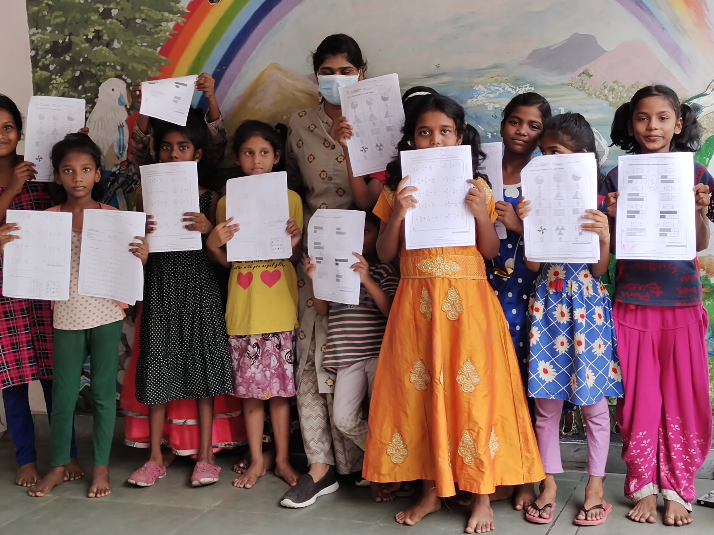
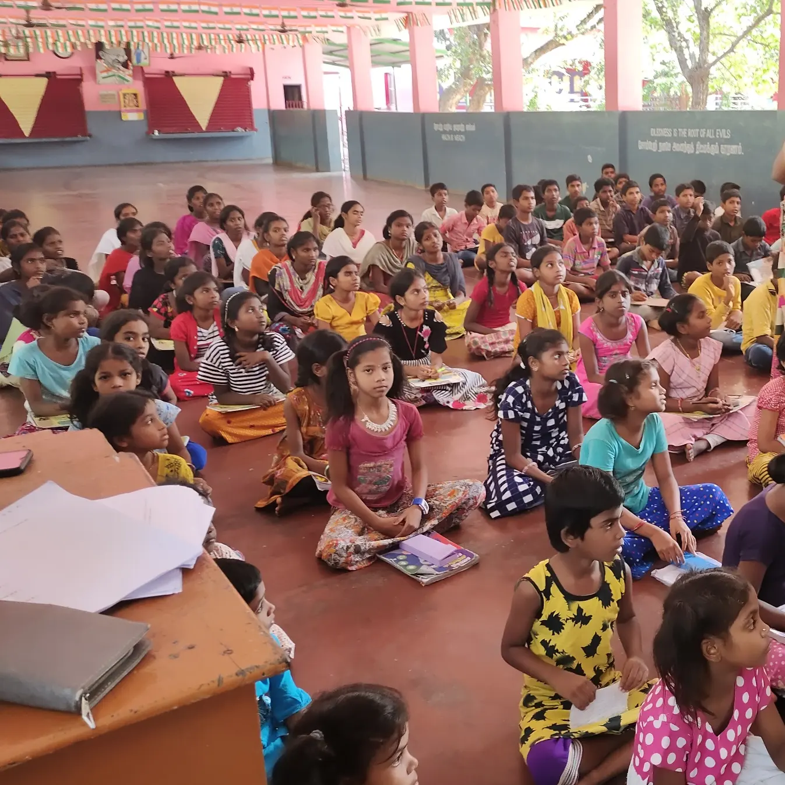
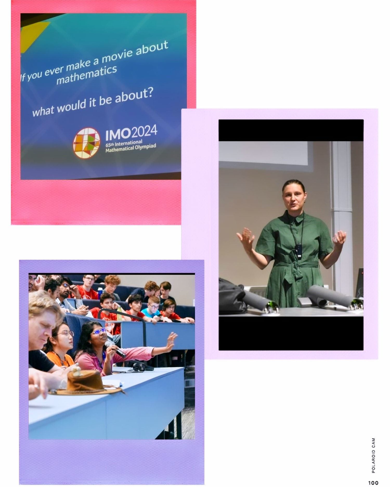
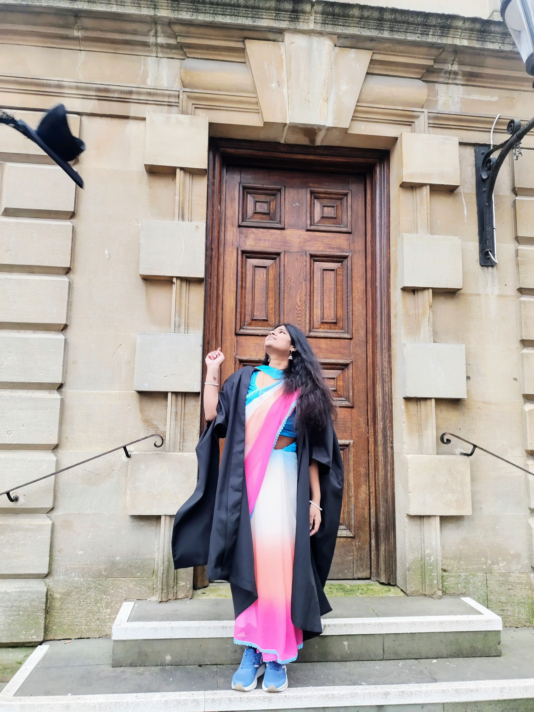

Research Interests
Partial differential equations, Computational fluid dynamics, optimisation problems, geophysical problems, machine
learning, statistical models, dynamical models, agent-based models and numerical techniques
Innovative Math Program
Founder & Lead Educator - Innovative Math Program, Tamil Nadu, India (05/2021 – 09/2023)
As the Founder and Lead Educator of the Innovative Math Program, I designed and launched a revolutionary online mathematics curriculum aimed at students from grades 1 to 8. The program introduces a unique, five-level educational framework that replaces traditional paper-and-pen learning with interactive games, engaging activities, riddles, and storytelling. This dynamic approach fosters a deep and joyful understanding of mathematical concepts. Over 500 students have successfully completed the program, including approximately 400 children from orphanages across Tamil Nadu. Many of these students advanced well beyond their expected grade levels, with some achieving proficiency in solving Grade 8–9 level problems. The program has also empowered students to earn accolades in international competitions such as the International Mathematics Olympiad (IMO) and Mathcounts, underscoring the effectiveness of this innovative teaching methodology.
Beyond research, I have always been driven by a sense of purpose rooted in service and empowerment. In the UK, I transformed my own personal pain into purpose by supporting autistic students and those who had discontinued their studies due to trauma and depression. By using mathematics as a healing and empowering tool, I helped them rebuild confidence, reignite curiosity, and reconnect with learning in special education settings.




👩🎓 About Me
“I can see people in equations.”
This is how I’ve always viewed mathematics, not as just numbers or models, but as a way to understand the world, its pain, its hope, and its people.
I was born and raised in a disaster-prone village in India, where I began working at the age of 8 with a dream much bigger than my surroundings. From a very young age, I imagined becoming a mathematical researcher, someone who solves global challenges with creativity and purpose. Life wasn't easy, but every hardship strengthened my resolve.
I am a first-generation graduate from an underprivileged background, and the journey to where I am today has been anything but linear. Transitioning from my village to the UK for fully funded higher education came with emotional trauma, bias, financial struggles, cultural shocks, food adaptation issues, and health challenges. But I never gave up. Instead, I reached out to acedemics, took on extra projects, and slowly rebuilt my strength through collaboration, learning, and passion for research.
One of the most defining moments of my journey was participating in ESGI180—an elite European study group with industry, where I was the only woman in a team of 20 academics . I contributed a double-pendulum optimization model for wave energy harvesting and was one of only 11 contributors featured in the final publication. Presenting my shortlisted idea in front of 70 international academics was a reminder that no matter where I come from, I belong in rooms where innovation happens.
Beyond research, I’ve always believed in turning pain into purpose. In the UK, I taught autistic students and those who had discontinued education due to depression and trauma. Through mathematics, I helped them rebuild confidence and reconnect with learning. This work was not just tutoring, it was healing through numbers.
Back in India, I founded the Innovative Math Program, which now reaches over 500 orphan children. This initiative eliminates traditional rote learning and introduces mathematics through games, stories, and hands-on activities. I designed this program from scratch and implemented it across orphanages, empowering children to perform far beyond their grade level and even succeed in international competitions like IMO and Mathcounts.
My journey is not just about mathematics, it's about resilience, service, empowerment, and finding magic in learning, even in the darkest times. I believe mathematics is not only a scientific tool but also a powerful force to transform lives, especially those who’ve been told they can’t.
📖 Ups & Downs (Blog)
🌟 Passion changes Impossibles into Miracles
🗓️ 2021–2023
“Universe always falls in love with a stubborn heart.”
There are moments in life when we feel like we are unlucky, have no money, no strong family background, no connections. But none of it matters when your heart is stubborn, your soul is fearless, and your spirit is ready to sacrifice for what it loves. 💪
I still remember struggling to learn English for the IELTS exam. I didn’t have the money to afford coaching or even to register for the test. But I had a dream, a 15-year-old dream of becoming a maths researcher who tackles global challenges and earns a PhD abroad. 🌍
People laughed. They said it was impossible. But when you believe in yourself and refuse to give up, miracles begin. ✨
I created the “Innovative Math Program”, a learning initiative where I taught students from 7 developed countries, including the US 🇺🇸 and UK 🇬🇧. Through teaching, I improved my own English and earned money to fund my IELTS journey. I cleared the exam, not with coaching, but with courage, creativity, and conviction.
And One of the strangest and most beautiful things I’ve learned in life is this: When you start walking with purpose, the path starts creating itself.
And as you clear your own hurdles, you unknowingly make it easier for others to walk the same path. 🌱
Today, the Innovative Math Program is inspiring nearly 500 orphan children to see mathematics not as fear, but as a future.
🔥When you truly want something, many people will say it’s impossible. Some will say “never give up,” and only a rare few might stand by you. But at this stage of my life, no one did.
And that’s when I realised, no one can really help you unless you are stubborn.
If you want something, you have to create your own opportunities and do it for yourself.
First Steps in the UK as a Mathematics Researcher
🗓️ 23rd October 2023
Never lose your inner child ❤️
It is important to enjoy every small moments in life 💞
Life is more of ups and downs. If life throws you under a difficult situation, make sure you become a warrior and fight with it.
My mom met with an accident just 3 months before my big day, I never quit, I scared (maybe) but I came out very quickly and I saved her alone.
Handled expenses, filed a complaint for the accident, make her walk. The most important thing is I never lose my dream in this.
Life gets tough, but when you are tougher than life, you can come out of any situation life throws you under.
So I am here. Never lose your inner child, I think this makes life feel lighter.
🎤 My First Big Presentation – 70 People, 20 academics and researchers, only woman
🗓️ June 2024
My 1st big presentation in front of 70 people. All praise to God 🙏. A great experience of working with 20 great academics and researchers from different parts of the world. I am also a little surprised that there is no girl other than me in the group, but challenging ourselves always makes us go places.
The miracle after the lowest point of my life. This is the day I waited for so long.
🪞 Reflection
When you think life can't go lower than this, everything goes wrong (Mar 2024 - June 2024), then motivate yourself, fuel the criticisms, listen to everyone even though they are wrong, but move forward. If you are really talented and hardworking, you will definitely win. The success feels so strong after overcoming a big challenge. It's worth it. Also, try to be authentic and honest — it creates opportunities.
😄 Fun Fact
Walking barefoot reduces stress and pain 😅.
Funding
I thank ESGI for funding the study group's accommodation fees
I thank SAMBa CDT for funding the travel costs for the event.
📚 Lesson
We always have to put ourselves in a very uncomfortable/challenging situation to learn and do something great.
No one can take away from you what you truly deserve.
Also, I learned that "Character" matters and it creates opportunities - Everyone is talented, passionate and hardworking in this world, but very few, rare are authentic and have a noble cause.
📸
Click here to see the presentation in the Gallery section.
🌿 Lessons Learned on a Research Visit — Rising from the Lowest Point
🗓️ 12th July 2024
Love is everywhere, we just need an open heart to see 💞.
I think my greatest strength are enthusiasm, hard work and persuasion skills. Also, I believe that I am inherently competitive, the fact that I am competitive pushed me to be confident. These are key to come out of any situation.
If you don't have opportunities, then you have to create one for yourself. This is one such opportunity to be remembered. But be honest and true to yourself while doing this. There are moments we have to cheat with life and people around us but on that one moment keep an honest and gentle heart. It matters and takes you to success.
💖 My Love
Maths, kids, nature, 🦢, hot chocolate, food, lake and caring people.
Funding
I thank the SAMBa CDT for funding this visit.
God is great!!
🏆 A Memorable Day – Meeting Fields Medalist Maryna Viazovska
🗓️ 20th July 2024
One more memorable day – met Maryna Viazovska (Fields medalist).
She asked: If you want to make a movie about mathematicians, who would that be?
I said: Myself 😅 (maybe manifesting in front of hundreds of people)
I asked: How did you find a Fields Medal project?
She said: We should have a discussion after presentation...
The first person who said "one day I will win a Fields Medal" – maybe as a motivation, but I heard this at the time when no one believed me.
Miracles do happen.
The day I can't forget. All thanks to God. She is a very nice and down to earth person.

📚 First Research Publication – Believing Beyond Doubt
🗓️ 2nd November 2024
My first research work got published in a journal. 11 out of 20 people are allowed to contribute to this work.
This is special because it happened after dodging a lot of bullets.
I still remember the day that I tried to convince all the researchers, the days I was scared, worried about what if my idea was not getting recognised or not working — but it happened.
I am truly grateful to my group members who helped me when I was struggling.
Even though everyone says it won't work and you can't do it, somehow if you deeply convince yourself it is going to happen, it should happen.
What we believe we become 👑.
📩 Message
In the Solomon Islands, villagers once practised a ritual where they cursed trees with words, believing the tree would slowly die without a single cut.
But if a tree survived, it was seen as sacred, powerful, untouchable.
Be like that tree, always rise above all.
🔗 Read the report (Section 7.4 is my work)
🎓 Graduation Day – A Masterpiece of Perseverance
🗓️ 16th January 2025
The best way to get what you want in life is to be true to yourself, Naive, kind, generous, and believe in yourself and be honest.
Yeah, you need hard work, talent, knowledge, experience and all but you can get all this through creating opportunities by being true to yourself.
Always think "I am the best" not with arrogance but with self confidence because mindset matters. This character does miracles in life 👑.
But make sure to take criticisms as a challenge and fuel them to achieve the impossible 😅 but with an honest and gentle heart 💞.
The one who does good will never have a bad ending. The best example is my story 👑.
So, focusing on building your character is the best thing needed to reach great success in life 💞
"When you lose your grip, you slip and you slip into a masterpiece." – So, sometimes letting go is important to learn new and touch heights in life.
This journey is a true meaning of resilient and perseverance ❤️.
